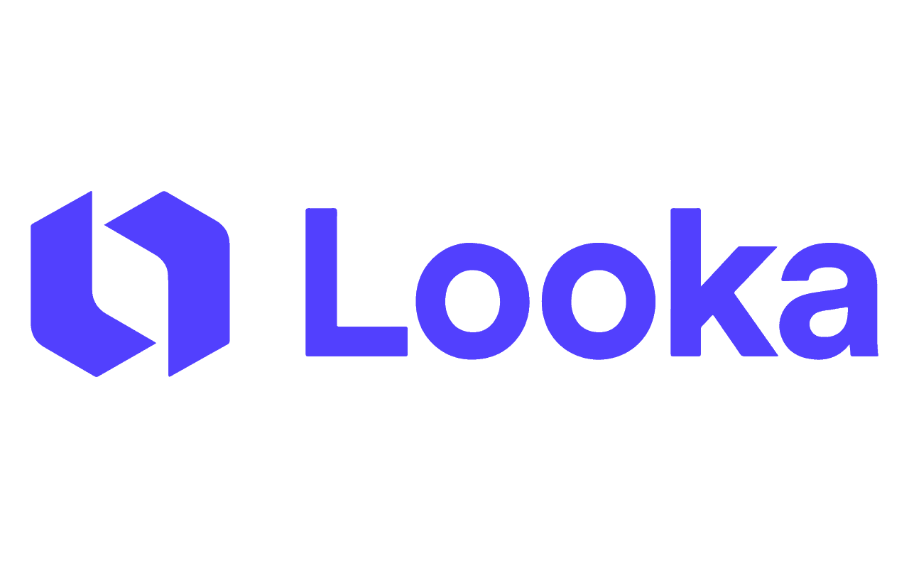
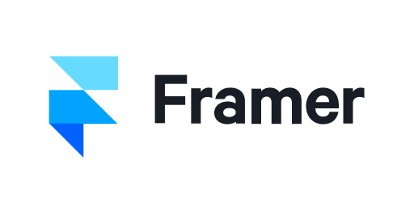
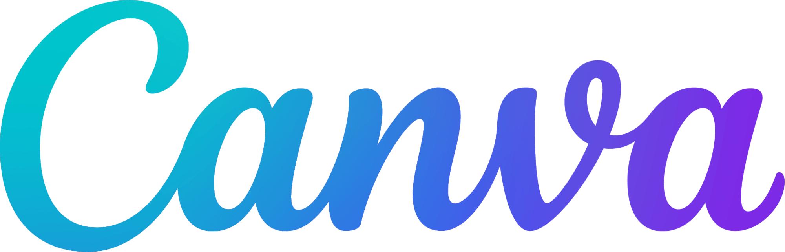
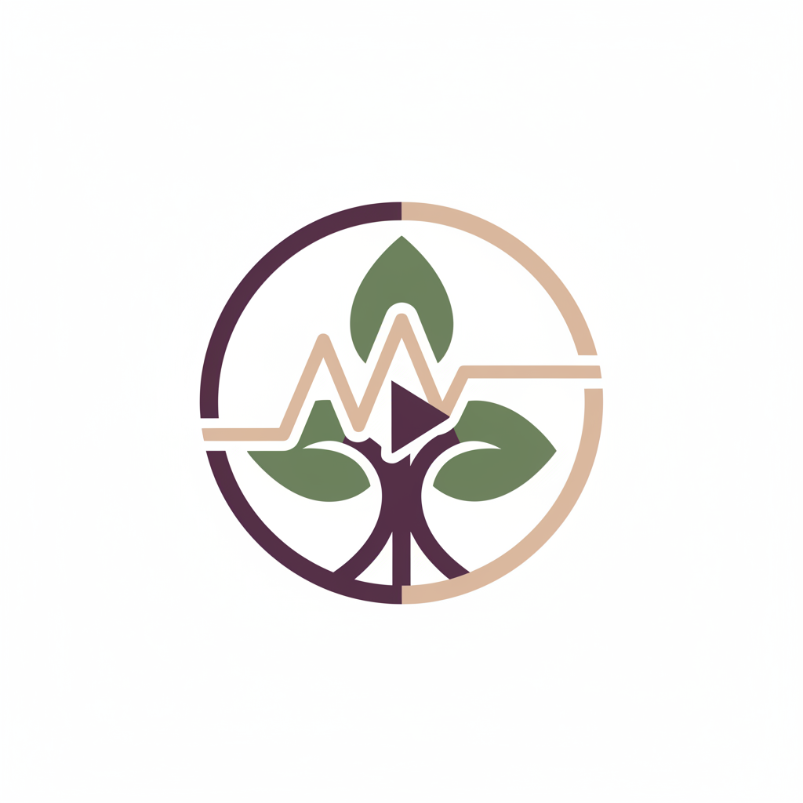

BEEVO

Beevo is an autonomous AI CMO that takes over the entire branding process from a single voice conversation. It runs live competitor research, generates a brand identity, and deploys a landing page with six autonomous agents continuously optimizing it in the background. What used to take 6 weeks and cost $15,000+ now takes 6 minutes.
Most founders spend more time on marketing than on building their product. Hiring a branding agency costs $15,000+ minimum and takes weeks of back-and-forth. Competitor research, A/B testing, and landing page optimization each require their own tools, their own expertise, and their own budget. For early-stage startups, the gap between an idea and a professional market presence is one of the hardest to close.
CHAPTER
PROBLEM & CONTEXT
Early-stage founders are simultaneously building product, managing operations, and trying to go to market. When I looked at how they approach branding, the pattern was consistent: they either spend $15,000+ on an agency they can't afford, struggle with five or more disconnected tools, or launch with zero visual identity and hope traction follows. The branding process itself (competitor research, color theory, typography, landing page copy) takes four to six weeks minimum and demands expertise most founders simply don't have.
Professional marketers use SWOT analysis, competitor research, A/B testing, and continuous optimization, all of which require specific expertise and expensive tooling. The landing page alone involves copywriting, visual design, CTA testing, and conversion analysis. What became clear was that these aren't creative mysteries. They're systematic, data-driven processes. The question became whether a multi-agent system could replicate these workflows reliably enough to produce professional-grade output without human intervention at every step.
The core challenge was not AI capability. Gemini's models are powerful enough. The challenge was orchestration: how do you coordinate voice interaction, live competitor research, asset generation, and continuous page optimization without the system collapsing into conflicts, state inconsistencies, or response latency that breaks the conversation feel? The answer required a fundamentally different architecture. Not a single model trying to do everything, but a dual-model bridge that separates voice from execution, with a filesystem-based state layer that all agents share as a single source of truth.



"I know my product is good. What I can't afford is six weeks and $15,000 to make it look like it is."
Product is ready but the brand isn't. Can't use Canva well enough to look professional. Can't afford a designer. Has spent more time adjusting logo files than talking to potential customers.
Get to a professional-looking brand fast enough to start pitching to early users without being embarrassed by the visual presentation.
"I can build the product in my sleep. The branding is the part that paralyzes me. Too many decisions, and none of them feel like engineering problems."
She and her co-founder keep delaying the public launch because the brand doesn't feel right. They've tried Canva and Looka but nothing looks consistent. Every tool gives a different visual "feel" with no connection between them.
A coherent brand identity that looks like it was built by someone who actually understands the market they're entering, not stitched together from free templates.
CHAPTER
ARCHITECTURE & SYSTEM

| Model | Purpose | Why this model |
|---|---|---|
| Gemini 2.5 Flash (Live) | Real-time voice conversation | Sub-100ms latency native audio streaming with built-in VAD. No other model handles PCM audio at this speed. |
| Gemini 3 Flash (Brain) | Tool orchestration & generation | Fast, reliable multi-step reasoning. Handles 20+ function declarations without decision fatigue. |
| Gemini 3 Pro (Strategist) | SWOT analysis & vision audits | Advanced reasoning for brand strategy. Also used for pixel-precise Guardian asset auditing. |
| Gemini 2.5 Flash Image | Logo & campaign generation | Parallel generation of 4 simultaneous logo variants. Instruction-following for brand-consistent imagery. |
| Veo 3.1 | Hero video generation | Cinematic MP4 output with camera movement, lighting, and color grade control from prompt. |
[ymin, xmin, ymax, xmax] for every flag. Wrong color, logo distortion, safe zone intrusion, brand-inconsistent content. The Guardian finds it and shows you the exact pixel location.CHAPTER
RESULTS & EXECUTION



CHAPTER
LEARNINGS
The Bridge Architecture was the right call. Separating Gemini Live from the Brain completely eliminated the response latency problem that had made every earlier prototype feel broken. The voice interaction became natural enough that people who tried Beevo during the competition kept saying it felt like talking to a CMO, not a chatbot. The workspace isolation system also proved robust; multiple simultaneous demo sessions ran without state conflicts. Thought Signatures were the unexpected win: every person who saw the reasoning chain on the canvas trusted the system enough to let the Watcher Agents run on their own. Transparency, not capability, turned out to be the differentiator.
The NanoBanana approach, generating structured JSON config instead of raw HTML, was one of the best engineering decisions in the project. LLM-generated HTML is unreliable and hard to validate. Structured JSON with a fixed schema is predictable, renderable, and debuggable. The landing page sections rendered correctly on first attempt far more consistently after we switched to this approach.
Persistent storage was the most painful gap in the current implementation. Cloud Run's ephemeral disk means workspace data is lost on container restart. For the hackathon timeline this was acceptable, but for a production system it's critical. The architecture needs Cloud SQL or Cloud Storage with proper persistence before real brands can rely on it. I would build this from day one rather than retrofitting it later.
Puppeteer's reliability on Cloud Run was inconsistent. Google Images IP blocking affected the logo inspiration scraping more than expected, even with the stealth plugin. The fallback to Search Grounding handled it, but a more robust design would integrate a dedicated screenshot API like Screenshotone or Browserless rather than running Chrome inside the application container.
Finally, I would build the A/B testing framework earlier. The Watcher Agents currently propose changes sequentially. True multivariate testing, deploying two landing page variants simultaneously and measuring which performs better, would make the optimization loop dramatically more powerful and would be the natural next step for what Beevo does.